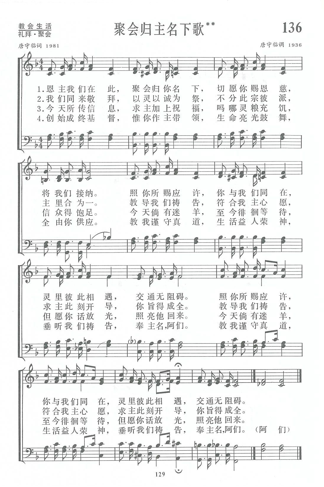

|
|
|
|
|
1.恩主我们在此，聚会归你名下， 切愿你赐恩慈，将我们接纳。 照你所赐应许，你与我们同在， 灵里彼此相遇，交通无阻碍。 照你所赐应许，你与我们同在， 灵里彼此相遇，交通无阻碍。 2.我们同来敬拜，以灵以诚为祭， 不分此宗彼派，主里合为一。 教导我们祷告，符合我主心愿， 求主此刻开导，你旨得成全。 教导我们祷告，符合我主心愿， 求主此刻开导，你旨得成全。 3.今天所传信息，求主加上祝福， 吗哪灵粮充饥，信众得饱足。 今天倘有迷羊，至今徘徊等待， 但愿你话放光，照亮他回来。 今天倘有迷羊，至今徘徊等待， 但愿你话放光，照亮他回来。 4.创始成终基督，惟你作主带领， 生命亮光鼓舞，全由你供应。 教我谨守真道，生活益人荣神， 垂听我们祷告，奉主名， 教我谨守真道，生活益人荣神， 垂听我们祷告，奉主名，阿们。 （阿们）
|
|
https://www.zanmeishige.com/tab/13809.html?songbook=1&index=136
 |
|
|
|
|

https://youtu.be/zVWbhMiCsxM
第136首 聚会归主名下歌** _唐守临 Blessed Lord here we are
经文：“因为无论在哪里，有两三个人奉我的名聚会。那里就有我在他们中间”(太18：2O)。
《聚会归主名下》歌是唐守临长老(事略参阅第51首)于1981年所写。
原作者属基督徒聚会处。在他周围有些弟兄姊妹认为，只有他们自己才是有生命的基督徒；只有他们所参加的教会才是真正的教会；有的甚至拒绝与别的教会交往。唐守临却不是这样。
解放以后，有的教会请他讲道，他总慨然应允，并与其他许多教会的同工、信徒保持主内交通。联合礼拜以后，他藉着讲道、写讲章，为更多弟兄姊妹供应灵粮。他所主编的《灵程吗哪》曾使许多人在灵程上得到滋润与指引。
写这首诗时，唐守临经常在怀恩堂讲道。这是上海一所较大的礼拜堂，主日上午的聚会有1OOO多人参加。
诗词的内容很能反映他的心情：经过动乱时期，神的儿女又能奉主的名聚会，何等甘美!他特别提到“不分此宗彼派，主里合为一”，求神赐下恩慈，接纳这样的聚会，并相信神必按着他的应许，与众人同在。
这首诗也把聚会的属灵意义清楚地予以阐明：如敬拜、祷告、传信息、交通，使迷羊归回，使信徒的生活荣神益人，使唱者感到出自心灵诚实等。全诗是一篇祷告，以“奉主名，阿们”结束。
这首诗的曲调也是唐守临自己所作，写于1936年。
https://www.xueshengshi.com/?p=6602